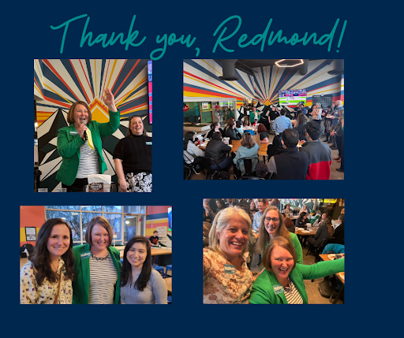

More than 70 friends and neighbors packed the house at Flatstick Pub last night to kick-off the campaign to re-elect Melissa Stuart to Redmond City Council.
Councilmember Stuart shared her commitment to standing up for our community's values, delivering the deeply affordable housing our community needs most, and building a safer transportation network.
Other speakers included Susan Weston (Chair, Redmond Planning Commission), Claudia Balducci (King County Council), and Vanessa Kritzer (President, Redmond City Council).
“We're so fortunate to have a leader like Melissa who is so willing to spend the time, take the tough votes, and show-up for us,” Balducci told the energized crowd.
Commissioner Weston shared why she appreciates Councilmember Stuart's leadership. “She is prepared”, said Weston. “Melissa brings a critical eye for the details, persistence, and courage to our city council.”
Please consider joining the campaign to re-elect Melissa Stuart with an online donation today!